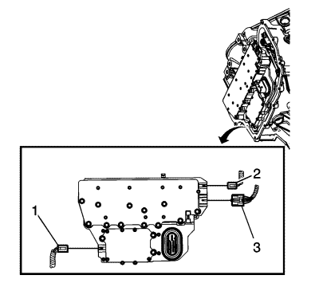
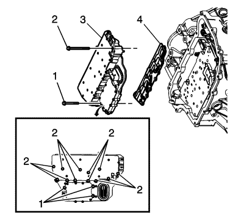
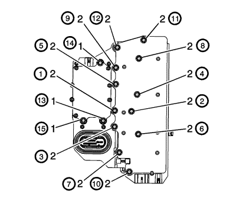

Sustitución del conjunto de válvula solenoide de control y módulo de control de la transmisión
Procedimiento de desmontaje
- Retire la cubierta del cuerpo de válvulas de control del cambio. Consultar Sustitución de la tapa del cuerpo de válvulas de control .

- Desconecte el conector eléctrico del sensor de revoluciones de salida (2).
- Desconecte el conector eléctrico del interruptor de posición del cambio (3).
- Desconecte el conector eléctrico del sensor de revoluciones de entrada (1).

- Extraiga los 3 tornillos del cuerpo de válvula de control (1) M5 x 40,5.
- Extraiga los 12 tornillos del cuerpo de válvula de control (2) M6 x 97.
- Extraiga el conjunto de válvulas solenoides de control (3) con módulo de control del cambio.
Atención: Tenga cuidado al desmontar o montar el conjunto de la placa de filtro. Una pestaña de retención suelta o ausente puede significar una sujeción incorrecta de la placa de filtro en el conjunto de la válvula solenoide de control, ocasionando posibles daños o contaminación.
- Extraiga la placa de filtro del conjunto de válvulas solenoides de control (4). Deseche la placa de filtro. No se puede reutilizar.
- Compruebe si las juntas del interruptor de presión están dañadas o contaminadas. Sustituya el conjunto de válvulas solenoides de control si fuera necesario.
- Compruebe si los orificios de paso de los tornillos de la placa de carriles están dañados o quemados. Cualquier punto defectuoso podría provocar fugas. Sustitúyalos si es necesario.
Procedimiento de montaje
Atención: Tenga cuidado al desmontar o montar el conjunto de la placa de filtro. Una pestaña de retención suelta o ausente puede significar una sujeción incorrecta de la placa de filtro en el conjunto de la válvula solenoide de control, ocasionando posibles daños o contaminación.
- Monte una placa de filtro del conjunto de válvulas solenoides de control NUEVA (4) para evitar que se produzcan fugas a través de los retenes de aceite.
- Monte el conjunto de válvulas solenoides de control (3) con módulo de control del cambio.
- Apriete con la mano los tornillos del cuerpo de válvula de control (1, 2).
Precaución:Consulte Precaución con las fijaciones en la sección Prólogo.

- Fije los 12 tornillos del cuerpo de válvula de control (2) M6 x 97 y apriételos por orden hasta 12 N·m (106 lib. pulg.).
- Fije los 3 tornillos del cuerpo de válvula de control (1) M5 x 40,5 y apriételos por orden hasta 8 N·m (71 lib. pulg.).
- Conecte el conector eléctrico del sensor de revoluciones de entrada (1).
- Conecte el conector eléctrico del sensor de revoluciones de salida (2).
- Monte la tapa del cuerpo de válvula de control del cambio. Consultar Sustitución de la tapa del cuerpo de válvulas de control .
- Tras las reparaciones, consulte Referencias de módulos de control para conocer los procedimientos de programación y configuración.
- Realice la programación de valores adaptativos de la transmisión. Consultar Programar valores adaptativos de la transmisión .
| © Copyright Chevrolet. Reservados todos los derechos |